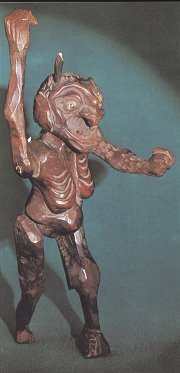

Pucherna: Kotce

Morstadt: Stavovské divadlo

|
OBROZENECKÉ DIVADLO
Vzdìlávací a vıchovné úkoly nejlépe plnilo obrozenecké divadlo, protoe mohlo oslovit i negramotné a chudé obyvatelstvo. Dramatikové zpracovávali zábavnou formou frašky nebo zpìvohry hlavnì námìty z èeské historie. Ve svıch hrách poukazovali na vıznam vlastenectví a dalších kladnıch hodnot a ctností. Nositeli pozitivních vlastností byli vìtšinou uvìdomìlí Èeši...
Kamennıch divadel s èeskımi pøedstaveními bylo minimum. Ve mìstech i na vesnicích vznikaly ochotnické soubory. Profesionální divadla bez stálé scény musela koèovat od jedné štace ke druhé (Tyl). Velkı vıznam mìla loutková pøedstavení (Kopeckı), která navštìvovali dospìlí i dìti. Na venkovì mìly velkou tradici lidové hry a rùzné slavnosti (masopust, pøástky, svatební obøady...). Bez jisté teatrálnosti se neobešla ani vystoupení zpìvákù kramáøskıch písní.
Poèátky novoèeského divadla
Prùkopníkem èeského divadelnictví byl Václav Thám (1765-1816). Psal první novoèeské hry (Bøetislav a Jitka aneb Únos z kláštera, Vlasta a Šárka aneb Dívèí boj u Prahy, Švédská vojska v Èechách aneb Udatnost praskıch mìšanù a studentù) pro Nosticovo divadlo a Boudu a zaloil C.k. vlastenecké divadlo (1786-1804). Jeho bratr Karel Ignác Thám (1763-1816) hry pøekládal (Macbeth, Loupeníci). Ménì vıznamnımi dramatiky byli Prokop Šedivı (1764-1810), autor frašek Masné krámy aneb Sázení do loterie a Praští sedláci, a Jan Nepomuk Štìpánek (1781-1844), kterı napsal veselohru Èech a Nìmec a historická dramata Bøetislav I., Èeskı Achilles nebo Obleení Prahy od Švédù.
|
Divadelní scény
Velkı problém byl s divadelními sály, ve kterıch by se smìla hrát èeská dramata. V prùbìhu 18. stol. proniká èeština do zámeckıch divadel (Šporkova divadla). V praském Divadle v Kotcích (1739-1783) hráli èesky cizí herci, jazyková úroveò pøedstavení tedy nebyla moc vysoká, ani první novoèeská hra Kníe Honzík (1771) nevynikala kvalitou, navíc šlo o pøeklad nìmecké veselohry... Pùvodní hry zaèalo soustavnìji uvádìt Nosticovo divadlo na Ovocném trhu a od roku 1785, ale èeská pøedstavení se zde musela støídat s nìmeckımi (název scény se zmìnil na Stavovské divadlo, kdy budovu zakoupily zemské stavy pro uvádìní èeskıch her). Vıznamná byla døevìná Bouda (1786-9) na Koòském trhu (Václavské námìstí), kde se hrála dramata bratøí Thámù. V Praze se èeské hry provozovaly ještì v Rùodole, U Hybernù a v Karmelitské ulici.
|
Václav Kliment Klicpera (1792-1859)
Klicpera pocházel z Chlumce nad Cidlinou, zemøel v Praze. Vyuèoval na gymnáziu v Hradci Králové, pozdìji se stal øeditelem praského Akademického gymnázia, ze kterého udìlal první èeskı ústav v Rakousku. Uèil Tyla, Erbena, Frièe, Hálka èi Nerudu. Byl skvìlım hercem i dramatikem. Psal historické povídky (Toèník) i hry (Blaník, Sobìslav, selskı kníe). Velké oblibì se tìšily jeho veselohry (Divotvornı klobouk, Rohovín Ètverrohı, Veselohra na mostì, Kadı nìco pro vlast, Hadrián z Øímsù...).
|
Václav Kliment Klicpera: Hadrián z Øímsù
V komedii Hadrián z Øímsù Klicpera paroduje oblíbené rytíøské pøíbìhy. Rytíø Svìtislav zaslíbil svou dceru Rumìnu Hadriánovi z Øímsù. Rumìna ale miluje neurozeného elmíra. Na Svìtislavùv hrad dorazí kromì skuteèného Hadriána také oldnéø Srpoš a rytíø Sobìbor, kteøí se za nìj postupnì vydávají. Rumìna je odmítá, ale její otec nechce o svatbì s elmírem ani slyšet. Svùj názor zmìní, kdy mu elmír zachrání ivot. Nakonec se ukáe, e neduivı Hadrián o Rumìnu vùbec nestojí a e Sobìbor se za Hadriána vydával proto, aby pomohl svému pøíteli elmírovi.
|
Scéna z Klicperovy hry
Charakterizuj jednotlivé postavy.
Jakımi prostøedky dosahuje Klicpera komického úèinku?
|
Josef Kajetán Tyl (1808-1856)

Tyl se narodil v Kutné Hoøe a zemøel v Plzni. Byl Klicperovım ákem. Køioval Èechy se svım koèovnım divadlem, pozdìji se stal dramaturgem Stavovského divadla a redigoval èasopis Kvìty (Kvìty èeské) a Praskı posel. il ve spoleèné domácnosti s manelkou Magdalénou a její sestrou Annou, se kterou mìl sedm dìtí... Je autorem veselohry
Fidlovaèka, báchorek Jiøíkovo vidìní, Tvrdohlavá ena, Lesní panna a Strakonickı dudák, historickıch her Krvavé køtiny aneb Drahomíra a její synové, Kutnohorští havíøi a Jan Hus a hry ze souèasnosti Palièova dcera. Napsal prózy Rozervanec nebo Poslední Èech. Tyl se snail diváky pøedevším vychovávat. Mezi kladnımi postavami najdeme vlastence, skromné a chudé lidi, milence nebo pohádkové bytosti, k zápornım postavám patøí národní odrodilci, prospìcháøi, zpáteèníci a Nìmci. Vìtšina her konèí vítìzstvím dobra nad zlem.

Opona Josefa Platzera (1751-1810) znázoròující svìtnici
|
Josef Kajetán Tyl: Fidlovaèka aneb ádnı hnìv a ádná rvaèka
Fidlovaèka je typickou hrou Josefa Kajetána Tyla. Jednoduchá zápletka s vlasteneckım námìtem je doplnìna mnoha písnìmi. Podobné zpìvohry byly velmi oblíbené u èeského publika. Vıznam hry spoèívá hlavnì v tom, e zde zaznìla píseò slepého houslisty Mareše (autorem hudby byl František Škroup), její první sloka se stala èeskou hymnou.
Josef Kajetán Tyl: Strakonickı dudák aneb
Hody divıch en
Strakonickı dudák je vlastnì moderní pohádkou. Hlavní postavou je dudák Švanda, kterému pomáhá jeho matka – víla Rosava. Zaèaruje jeho hudební nástroj, ale Švanda zázraèné dudy nedokáe správnì vyuít. Uvìøí podvodníkovi Vocilkovi, kterı chce na Švandovıch schopnostech zbohatnout. Putuje s ním do Ameriky, ale pøi prvních problémech ho Vocilka opustí. Naštìstí mu pomùe jeho milá Dorotka a šumaø Kalafuna. Švanda poznává, e pøátelství a láska jsou dùleitìjší ne peníze a úspìch a vrací se domù.
Josef Kajetán Tyl: Palièova dcera
Palièovu dceru mùeme oznaèit za realistické drama ze souèasnosti. Hlavní hrdinka Rozárka se musí vypoøádat s dùsledky zloèinu svého otce, kterého touha po pomstì dohnala a ke háøství. Jako „palièova dcera“ má velké problémy se zaøazením do spoleènosti, ale jak je v Tylovıch hrách zvykem, vše dobøe dopadne. Obìtavá Rozárka, která se stará o své osiøelé sourozence a otcùv zloèin dokonce vezme na sebe, najde lásku a získá odmìnu od bohaté tety.
|
František Škroup

Píseò Marešova
Kde domov mùj?!
Voda huèí po luèinách,
bory šumí po skalinách,
v sadì skví se jara kvìt,
zemskı ráj to napohled!
A to jest ta krásná zemì –
Zemì èeská – domov mùj!
Kde domov mùj?!
V kraji znáš-li bohumilém
Duše útlé v tìle èilém,
Mysl jasnou, vznik a zdar,
A tu sílu, vzdoru zmar:
To je Èechù slavné plémì –
Mezi Èechy – domov mùj!

Premiérová cedule k Tylovì Fidlovaèce
Víš, co byla fidlovaèka?
Co se dozvídáme o hlavních postavách z ukázek Tylovıch dramat?
Jakı je Švanda a Vocilka? Co mùeme øíci o Rozárce?
|
Loutkové hry
První doklady o existenci loutek máme u ze støedovìku. Vìtšina loutkovıch her nebyla urèena dìtem, ale dospìlému publiku. Loutkáøi pøejímali zahranièní hry (Doktor Faust), èerpali námìty z kníek lidového ètení a upravovali dramata urèená pro ivé herce. V loutkovıch hrách navíc vystupovaly komické postavy jako Kašpárek nebo Škrhola.

Loupeníci a don Šajn loutkáøky Arnošty Kopecké (1842-1914)

Loutky sedláka Škrholy a Hospodského od Josefa Róna z Vysokého nad Jizerou
|
Don Šajn
Don Šajn (zkomolenina jména don Juan) zavradil otce své snoubenky Anny, protoe nechtìl splnit svùj slib a dát mu svou dceru za manelku. Na útìku zabíjí také nevinného poustevníka a jeho duše propadá peklu. Komické situace jinak tragické hry rozehrává Šajnùv sluha Kašpárek.
Strejèek Škrhola
Zápletka veselohry Strejèek Škrhola je velmi jednoduchá. Šlechtic Záruba odmítne dát svou dceru Adletu loupeivému rytíøi Lorekovi. Ten se rozhodne pomocí lsti dobıt jeho hrad Valeèov. Náhodou jeho plán vyslechne Kašpárek, kterı pospíchá Zárubu varovat. Na Valeèov se vydá spoleènì s popletou Škrholou. Díky pomoci rytíøù ze sousedních hradù loupeníci neuspìjí a Kašpárek i Škrhola dostanou zaslouenou odmìnu.
|
Matìj Kopeckı (1775-1847)
Kopeckı prošel øadou zamìstnání. Byl vojákem, opravoval hodiny, ivil se jako nádeník, cestáø, kramáø nebo obchodník s knoflíky a velbloudí srstí. Pozdìji získal koncesi k provozování „mechanickıch kumštù s marionetami“. Se svımi loutkovımi pøedstaveními objídìl èeské vesnice i mìsteèka. Jeho repertoár zahrnoval pøiblinì 60 titulù a vıznamnì se nelišil od ostatních loutkáøù.

Loutka Kašpárka
Sehrajte vybrané ukázky jako loutkové pøedstavení.
|
Internetové stránky
Tyl: Èeské granáty
Historie èeského loutkáøství
Stavovské divadlo
Opony J.Platzera
Exkurze
Rodnı dùm J.K.Tyla, Kutná Hora
Muzeum loutek, Dìèínskı zámek
Muzeum loutkáøskıch kultur, Chrudim
Divadelní oddìlení Národního muzea, Praha
Mezinárodní institut loutkáøského umìní, Praha
Moravské zemské muzeum, Brno
Tipy
Hymna, divadelní hra L.Smoljaka (vyšlo na CD)
|
Doporuèená èetba
Èernı, František: Kapitoly z dìjin èeského divadla, Academia, Praha 2000
Dìjiny èeského divadla (2. a 3. díl)
Divadlo v Kotcích, Panorama, Praha 1992
Horyna, Václav: Dùvìrné listy Václava Klementa Klicpery, Kruh, Hradec Králové 1982
Jiøíkovo vidìní a jiné pøíbìhy, které podle divadelních her Josefa Kajetána Tyla dìtem vypravuje Vladimír Kováøík, Albatros, Praha 1978
Justl, Vladimír: Václav Kliment Klicpera, Orbis, Praha 1976
Kaèer, Miroslav: Václav Thám, Praha 1965
Kaèer, Otruba: Josef Kajetán Tyl, Orbis, Praha 1959
Klicpera, Václav Kliment: Vıbor z díla, SNKLHU, Praha 1955
Lidové hry z Moravy, Praha 1986
Locus amoenus – místo líbezné, Sborník pøíspìvkù ze symposia o èeské hymnì, KLO, Praha 1994
Loutkáøské hry èeského obrození, Èeskoslovenskı spisovatel, Praha 1952 (Jan doktor Faust, Don Šajn, Strejèek Škrhola...)
Menèík, F.: Prostonárodní hry divadelní, Holešov 1895
Sousedské divadlo èeského obrození, Praha 1987
Spisy Josefa Kajetána Tyla (20 svazkù)
Svìt loutek, Kruh, Hradec Králové 1978
Vejrychová-Solarová, Boena: Loutky Matìje Kopeckého, Odeon, Praha 1974
Tyl, Josef Kajetán: Fidlovaèka aneb ádnı hnìv a ádná rvaèka, Praha 1945
Tyl, J.K.: Palièova dcera, Praha 1945
Tyl, J.K.: Strakonickı dudák aneb Hody divıch en, SPN, Praha 1956
|
Pøiprav si referát o nìkteré z uvedenıch knih nebo internetovıch stránek.

Døevìná loutka èerta
|
|